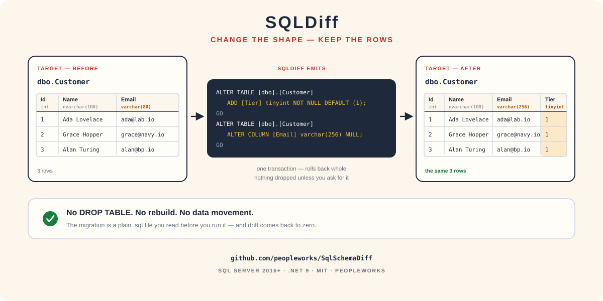

InstalaciónInstall
Binario autocontenido, herramienta global de .NET, o compilar. Corre en Windows, Linux y macOS, contra SQL Server 2016 o superior — cualquier edición, Azure SQL incluida.
Self-contained binary, .NET global tool, or a build. Runs on Windows, Linux and macOS, against SQL Server 2016 or newer — any edition, Azure SQL included.
Binario o herramientaBinary or tool
# herramienta global: instala el comando `sqldiff`global tool: installs the `sqldiff` command
dotnet tool install --global SqlSchemaDiff
sqldiff --version
sqldiff --helpO baja el binario autocontenido para Windows o Linux desde Releases ↗: no hay runtime que instalar al lado, viene incluido.
Or download the self-contained binary for Windows or Linux from Releases ↗: nothing to install alongside it, the runtime is bundled.
Compilar desde el códigoBuild from source
git clone https://github.com/peopleworks/SqlSchemaDiff.git
cd SqlSchemaDiff
dotnet build SqlSchemaDiff.csproj -c Release
dotnet bin/Release/net9.0/sqldiff.dll --help- .NET 9
- SDK para compilar; el binario del release no lo necesitaSDK to build; the release binary needs none
- SQL Server
- 2016+ — Developer, Express, Azure SQL
- SO / OS
- Windows · Linux · macOS
ConexionesConnections
Antes de comparar nada, conviene saber cómo entregar la cadena de conexión sin dejarla escrita en el historial del shell.
Before comparing anything, it is worth knowing how to hand over the connection string without leaving it in your shell history.
Tres formas más segurasThree safer forms
# un archivo cuyos permisos controlasa file whose permissions you control
sqldiff extract --conn-file ./prod.conn
# indirección por variable nombradaindirection through a named variable
sqldiff extract --conn env:MY_CONN
# la variable por defectothe default variable
SQLDIFF_CONN="Server=…" sqldiff extractLos dos lados tienen las mismas tres formas.
Both sides have the same three forms.
| LadoSide | OpcionesOptions |
|---|---|
| ÚnicoSingle | --conn · --conn-file · SQLDIFF_CONN |
| OrigenSource | --source-conn · --source-conn-file · SQLDIFF_SOURCE_CONN |
| DestinoTarget | --target-conn · --target-conn-file · SQLDIFF_TARGET_CONN |
Verificar antes de compararVerify before comparing
Imprime servidor, base, login, versión y edición de cada lado. Es el primer comando que conviene correr en una máquina nueva.
Prints server, database, login, version and edition for each side. It is the first command worth running on a new machine.
sqldiff check-conn --source-conn "$DEV" --target-conn "$PROD"En Windows, sin contraseñaOn Windows, no password at all
Server=SQL1;Database=App;Integrated Security=True;
Encrypt=True;TrustServerCertificate=TrueTrustServerCertificate=True es para servidores internos y de
desarrollo. En producción, use un certificado en el que el cliente confíe.
TrustServerCertificate=True is for internal and development
servers. In production, use a certificate the client trusts.
Inicio rápidoQuick start
La secuencia habitual. El paso 3 es el que importa.
The usual sequence. Step 3 is the one that matters.

# 1 · verificar que alcanzas los dos ladosmake sure you can reach both sides
sqldiff check-conn --source-conn "$DEV" --target-conn "$PROD"
# 2 · escribir el script; no se aplica nadawrite the script; nothing is applied
sqldiff diff --source-conn "$DEV" --target-conn "$PROD" --out changes.sql
# 3 · LEER changes.sql. Este es el paso que importa.READ changes.sql. This is the step that matters.
# 4 · aplicarloapply it
sqldiff apply --conn "$PROD" --script changes.sql --log apply.logSi prefiere un solo paso, deploy es diff + apply
junto, y la aplicación corre en una transacción que revierte entera.
If you would rather do it in one step, deploy is diff +
apply together, and the apply runs in one transaction that rolls back whole.
sqldiff deploy --source-conn "$DEV" --target-conn "$PROD" --out changes.sqldiff/deploy otra vez —
contra un destino que ya coincide, produce un script vacío y no hace nada.
A generated script is a delta for one specific pair of databases, so it
is not meant to be re-run: applying it twice fails on the objects it already created. To
bring a target up to date again, run diff/deploy again — against a
target that already matches, it produces an empty script and does nothing.
ComandosCommands
Seis comandos. Tres de ellos escriben en una base; los otros tres solo leen y producen archivos.
Six commands. Three of them write to a database; the other three only read and produce files.
| ComandoCommand | ¿Escribe?Writes? | Qué haceWhat it does |
|---|---|---|
check-conn | no | Verifica la conexión e imprime servidor, base, login, versión y ediciónVerifies a connection and prints server, database, login, version and edition |
extract | no | Guiona una base entera a .sql, y opcionalmente un snapshot .jsonScripts a whole database to .sql, and optionally a .json snapshot |
diff | no | Compara origen contra destino y escribe el script. Nunca toca el destino.Compares source against target and writes the migration script. Never touches the target. |
drift | no | Como diff, pero sale con código 2 cuando algo difiere. Hecho para CI.Like diff, but exits 2 when anything differs. Built for CI. |
apply | síyes | Corre un script existente contra una base, en una sola transacciónRuns an existing script against a database, in one transaction |
deploy | síyes | diff + apply en un paso. sync es lo mismo con --apply explícito.diff + apply in one step. sync is the same with an explicit --apply. |
extract
sqldiff extract --conn "$DEV" `
--out schema.sql `
--json schema.snapshot.json--out por defecto es schema.sql. --json es
opcional y es lo que habilita comparar sin las dos bases en línea.
--out defaults to schema.sql. --json is
optional, and it is what makes comparing without both databases online possible.
apply
sqldiff apply --conn "$PROD" `
--script changes.sql `
--log apply.log `
--timeout-seconds 600El timeout por defecto es de 120 segundos por lote. Súbalo si la migración crea índices grandes.
The default timeout is 120 seconds per batch. Raise it when the migration builds large indexes.
FiltrosFilters
Un patrón es [tipo:]glob, donde el tipo es table, view, proc o func, y el glob acepta * y ? contra esquema.nombre o el nombre pelado. Varios se separan con comas.
A pattern is [type:]glob, where the type is table, view, proc or func, and the glob takes * and ? against schema.name or the bare name. Separate several with commas.
sqldiff diff … --include "Sales.*" # un esquemaone schema
sqldiff diff … --include "table:" # solo tablastables only
sqldiff diff … --exclude "proc:usp_Temp*,dbo.Audit*" # saltar temporales y auditoríaskip scratch procs and audit tables
sqldiff diff … --include "dbo.Customer,dbo.Order*" # un puñado con nombrea named handful--include-drops borraría justo lo que pidió dejar en paz.
Filters apply to both sides. That matters: filtering only the source
would leave a skipped object looking target-only, and a later --include-drops
run would delete the very thing you asked it to leave alone.
Una corrida filtrada lo dice en la primera línea de su salida, así que una comparación estrechada nunca se confunde con una limpia:
A filtered run says so on the first line of its output, so a narrowed comparison is never mistaken for a clean one:
Filtered comparison (include=table:, exclude=dbo.T7); objects
outside the filter were not compared.Snapshots
Comparar sin tener las dos bases en línea al mismo tiempo.
Comparing without both databases online at the same time.
extract --json escribe la estructura del origen en un archivo. Cométalo,
envíelo, compare contra él más tarde — útil cuando el origen es una máquina de desarrollo y el
destino es el servidor de un cliente que alcanza una vez al mes.
extract --json writes the source structure to a file. Commit it, ship it,
diff against it later — useful when the source is a developer machine and the target is a
customer server you reach once a month.
sqldiff extract --conn "$DEV" --out schema.sql --json schema.snapshot.json
sqldiff deploy --source-snapshot schema.snapshot.json `
--target-conn "$CUSTOMER" --add-only- --source-snapshot
- usa un
.jsoncomo origen en vez de una conexiónuse a.jsonas the source instead of a connection - --target-snapshot
- lo mismo del lado del destinothe same on the target side
- --add-only
- solo agrega lo que falta; no modifica lo existenteonly adds what is missing; leaves existing objects alone
SeguridadSafety
Esta herramienta escribe DDL contra bases que tienen datos adentro, así que los valores por defecto son conservadores.
This is a tool that writes DDL against databases with data in them, so the defaults lean conservative.
Una transacciónOne transaction
apply, sync y deploy corren cada lote en una
sola transacción. Si un lote falla, el cambio entero se revierte y el destino queda exactamente
como estaba. --no-transaction se sale de eso.
apply, sync and deploy run every batch in a
single transaction. If any batch fails, the whole change rolls back and the target is left
exactly as it was. --no-transaction opts out.
Nada se borra si no lo pideNothing is dropped unless you ask
Una columna, constraint o índice que solo existe en el destino se reporta como
comentario -- WARNING: y se deja en su lugar.
A column, constraint or index that exists only on the target is reported as a
-- WARNING: comment and left in place.
- --include-drops
- habilita borrar esos objetosenables dropping those objects
- --include-table-drops
- borrar tablas enteras necesita esto encimadropping whole tables needs this on top
- --allow-table-rebuild
- permite reconstruir una tabla cuando un
ALTERno alcanzaallows rebuilding a table when anALTERcannot do it
EnsayarRehearse
# no escribe: muestra lo que haríawrites nothing: shows what it would do
sqldiff deploy --source-conn "$DEV" --target-conn "$PROD" --dry-run
# deja constancia de lo aplicadoleave a record of what was applied
sqldiff apply --conn "$PROD" --script changes.sql --log apply.logALTER que emite preservan las filas que ya están ahí. Ese es el
punto entero de la herramienta: cambiar la forma sin reconstruir la tabla.
The ALTER statements it emits preserve the rows already there.
That is the whole point of the tool: change the shape without rebuilding the table.
Drift en CIDrift in CI
drift sale con 2 cuando las bases difieren y con 0 cuando coinciden — así un pipeline puede fallar la build cuando producción divergió en silencio del esquema del repositorio.
drift exits 2 when the databases differ and 0 when they match — so a pipeline can fail the build when production has quietly diverged from the schema in your repository.
GitHub Actions
- name: Fail if production drifted
run: |
sqldiff drift \
--source-snapshot schema.snapshot.json \
--target-conn "$PROD_CONN" \
--out drift.sql
env:
PROD_CONN: ${{ secrets.PROD_CONN }}Códigos de salidaExit codes
0 | ÉxitoSuccess |
1 | Error — el mensaje va a stderrError — the message is on stderr |
2 | Drift detectado (solo drift)Drift detected (drift only) |
drift activa --include-drops y
--include-table-drops por defecto, porque su trabajo es reportar toda
diferencia. El script que escribe es un reporte: no lo canalice a apply
sin leerlo.
drift enables --include-drops and
--include-table-drops by default, because its job is to report every
difference. The script it writes is a report; do not pipe it into
apply without reading it.
Herramienta hermana — SyncJobCompanion tool — SyncJob
SQLDiff mueve la estructura. SyncJob mueve los datos. Primero la forma, después las filas.
SQLDiff moves the structure. SyncJob moves the data. Structure first, then the rows.
# la estructura, después las filasthe structure, then the rows
sqldiff deploy --source-conn "$DEV" --target-conn "$WAREHOUSE"
SyncJob.exe run -c appsettings.json -s SalesSync
# o poner drift como compuerta delante de la corrida nocturnaor put drift as a gate in front of the nightly run
sqldiff drift --source "…" --target "…" || exit 1
SyncJob.exe run -c appsettings.json --allUna carga masiva hacia un destino cuya estructura cambió va a fallar de todos modos — y falla más claramente acá. Verificar la forma cuesta segundos.
A bulk load into a destination whose structure has drifted is going to fail anyway — and it fails more clearly here. Checking the shape costs seconds.
Las tres herramientas de bases de PeopleWorks: guía de DBFSync · SQLDiff · guía de SyncJob
The three PeopleWorks database tools: DBFSync guide · SQLDiff · SyncJob guide
ChuletaCheat sheet
Todos los comandos y todas las opciones.
Every command and every option.
| ComandoCommand | Aliases | Qué haceWhat it does |
|---|---|---|
sqldiff --help | -h | Lista de comandos y opcionesCommand and option list |
sqldiff --version | -v | VersiónVersion |
check-conn | check-connection | Verifica una conexiónVerifies a connection |
extract | — | Guiona una base a .sql / .jsonScripts a database to .sql / .json |
diff | — | Escribe el script de migración; no aplicaWrites the migration script; applies nothing |
drift | — | Como diff; sale con 2 si difierenLike diff; exits 2 when they differ |
apply | — | Corre un script en una transacciónRuns a script in one transaction |
deploy | delta-apply | diff + apply |
sync | — | Igual que deploy, con --apply explícitoSame as deploy, with an explicit --apply |
| OpciónOption | Qué haceWhat it does |
|---|---|
--conn · --connection | Conexión única. Acepta env:NOMBRESingle connection. Accepts env:NAME |
--conn-file | Archivo con la cadena de conexiónFile holding the connection string |
--source-conn · --target-conn | Conexión de cada lado (-conn-file también)Each side's connection (-conn-file too) |
--source-snapshot · --target-snapshot | Usar un .json en vez de una conexiónUse a .json instead of a connection |
--out <PATH> | Script de salida. Default schema.sqlOutput script. Defaults to schema.sql |
--json <PATH> | Snapshot JSON de extractJSON snapshot from extract |
--script <PATH> | Script a ejecutar con applyScript for apply to run |
--log <PATH> | Bitácora de la aplicaciónAudit log of the apply |
--include · --exclude | Filtros [tipo:]glob, separados por comas[type:]glob filters, comma-separated |
--include-drops | Permite borrar objetos que solo existen en el destinoAllows dropping objects that exist only on the target |
--include-table-drops | Permite borrar tablas enterasAllows dropping whole tables |
--allow-table-rebuild | Permite reconstruir una tabla cuando un ALTER no alcanzaAllows a table rebuild when an ALTER cannot do it |
--add-only | Solo agrega lo que faltaOnly adds what is missing |
--apply | Con sync: aplica de verdadWith sync: actually apply |
--dry-run | Muestra lo que haría sin escribirShows what it would do without writing |
--no-transaction | No envolver la aplicación en una transacciónDo not wrap the apply in a transaction |
--timeout-seconds <N> | Timeout por lote. Default 120Per-batch timeout. Defaults to 120 |